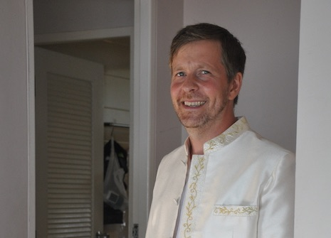

Om mig
Trebarnsfar nej, fyrabarnsfar! Make, vän.
Utvecklare, musikälskare, hobbycyklist, fotografientusiast

Jag bor med min familj i Sollentuna och arbetar i Stockholm.
Det mesta av min fritid går åt till att vara far. Jag försöker också hålla mig i form, t.ex. genom att cykla till jobbet och gå på gymmet så ofta jag kan. Och hitta sätt att få mer gjort.
Om jag får någon tid över brukar jag försöka hitta små projekt som jag kan använda till att lära mig saker och kanske också lösa något problem som jag har. Eller så kanske jag får inspiration till att ta några bilder eller mixtra i Lightroom. Men det är inte ofta jag får tid över just nu.
Min nuvarande anställning är som systemutvecklare på Thomas Cook Northern Europe, där jag jobbar med webben. En del av arbetet är ASP.NET/C# men det verkligt roliga jobbet är nyutvecklingen på en Javascript-stack med Node, React/Redux, GraphQL, Apollo, MongoDB. Med molnet kommer andra spännande tekniker: Azure, Docker, ACS, AKS, Drone, etc., etc.
Mina första försök till utveckling gjorde jag i BASIC på en IBM XT-klon som min far köpte någon gång på 80-talet.
Därefter gick jag vidare till Pascal innan jag svängde över helt när jag började på universitetet och lärde mig
C++ på min första programmeringskurs. Vägen har sedan gått via Java till C#/.NET och nu vidare mot allt mer Javascript.
Yrkesmässigt har jag arbetat i hela stacken från SQL Server via C#/.NET till HTML/CSS/Javascript på klientsidan
men slipper numer det mesta av databashanteringen.
Räknar man efter har jag genom åren använt mig av ett fantastiskt antal språk. Från assembler på simulerade RISC-maskiner
och utveckling direkt i Java bytecode som på kurserna i Datorarkitektur, via C (standard och med utökningar för
parallellprogammering) över C++ och Java till LISP i kursen i Artificiell Intelligens. Ruby, Perl och Python kommer
också in på ett hörn, framförallt i kurser där textbearbetning är nödvändig. I exjobbet använde jag t.ex. Python
extensivt. På min förra arbetsplats fick jag till och med lära mig utveckla i VBA för att ta fram makron som för
automatisk generering av dokument från databasdata via mallar.
Tidigare studerade jag i Uppsala. Länge. Nu har jag avslutat civilingenjörsprogrammet i Molekylär Bioteknik med inriktning mot bioinformatik. Jag har också läst en massa andra kurser, främst inom datavetenskap. När (eller om) jag lyckas avsluta mitt exjobb kommer jag också att kunna lägga M.Sc. C.S. till titlarna.
Under de senare åren när jag pluggade och under några år när jag inte pluggade, jobbade jag som personlig assistent.
Under tiden i Uppsala engagerade jag mig en del i nationens (Kalmar nations) bostadsstiftelse. Flytten till Sollentuna gjorde det dock omöjligt att fortsätta det engagemanget.